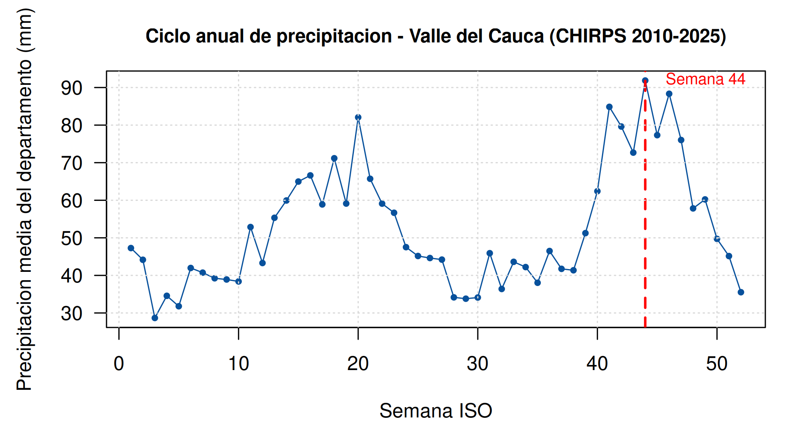
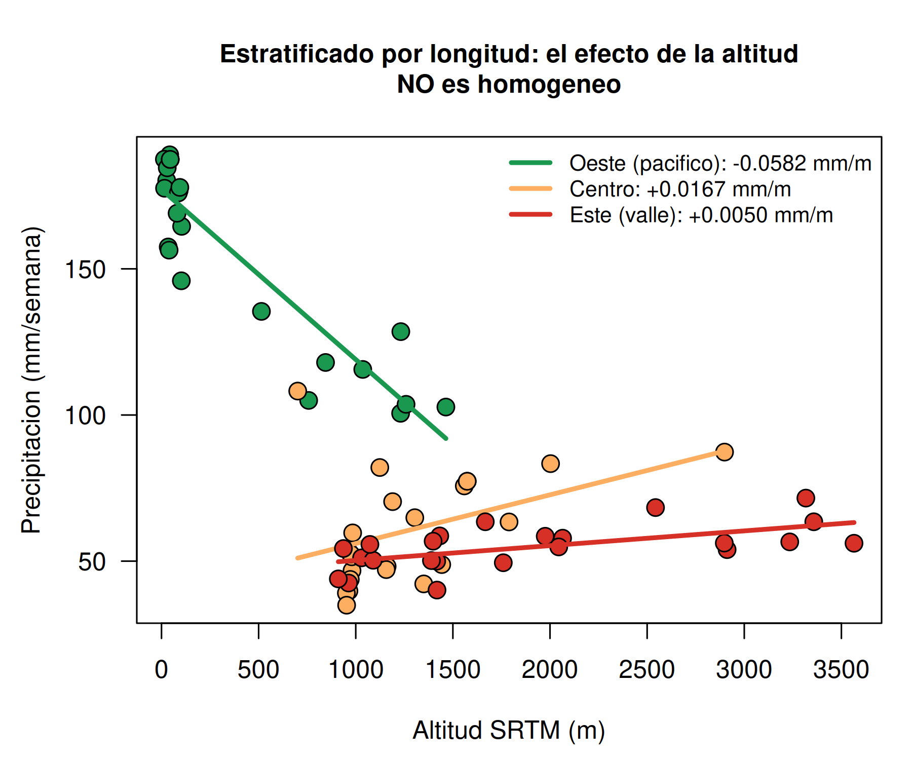
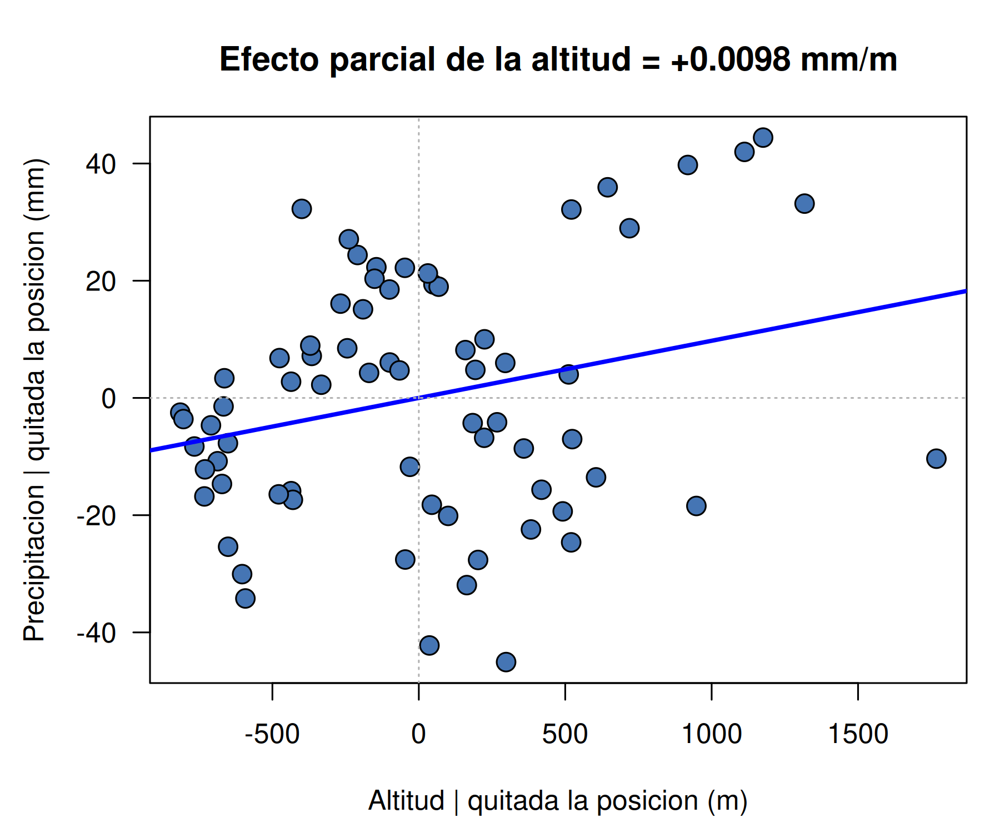
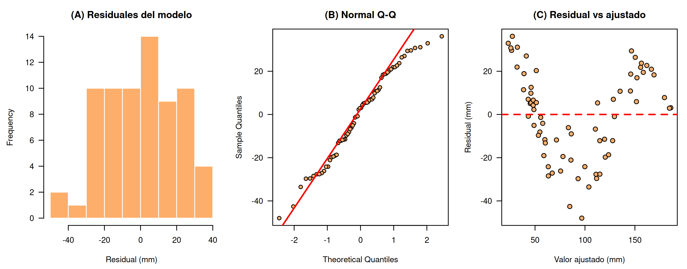
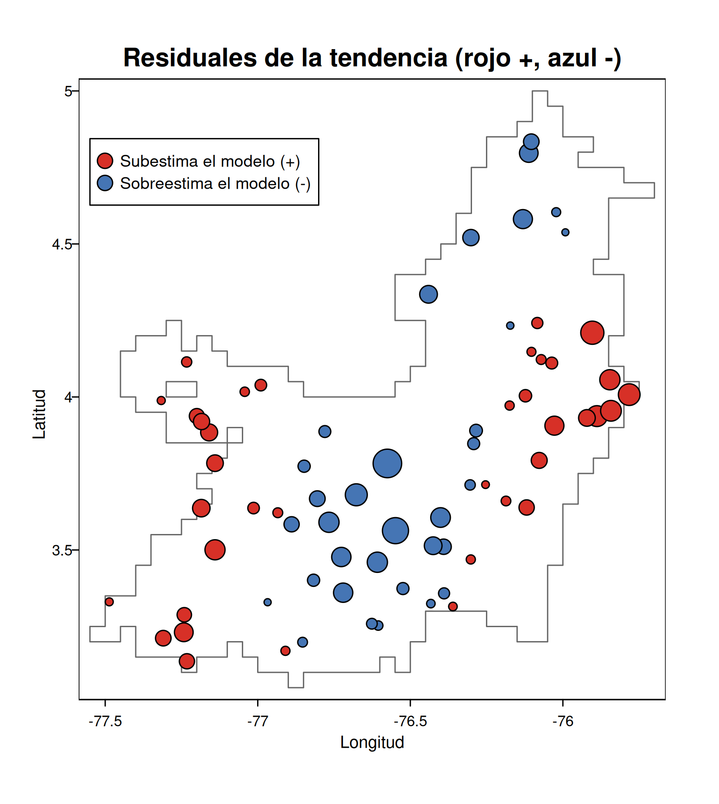
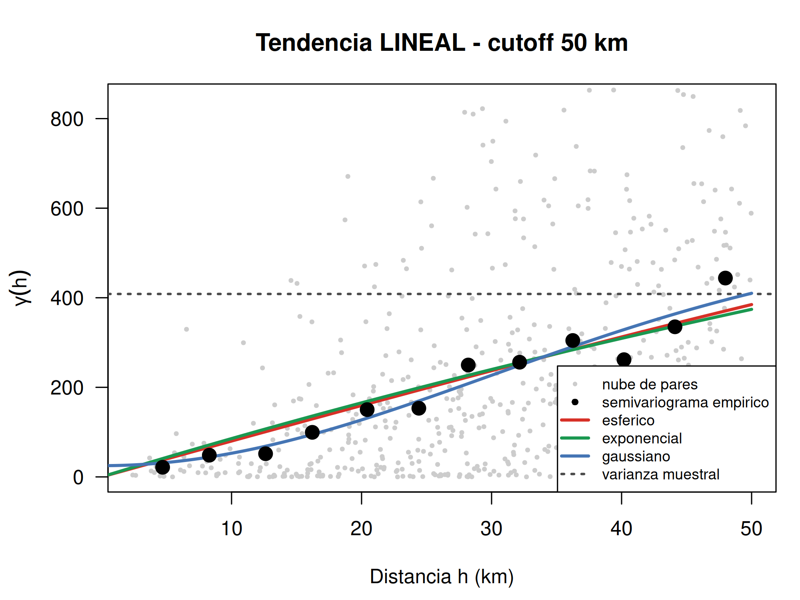
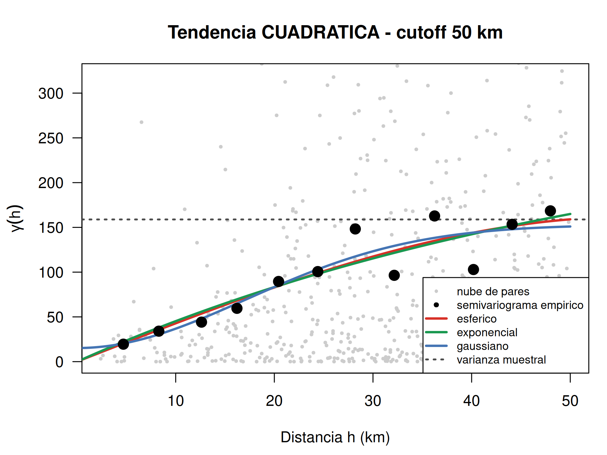
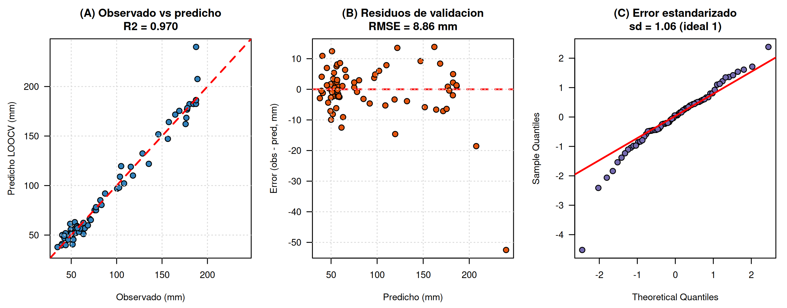
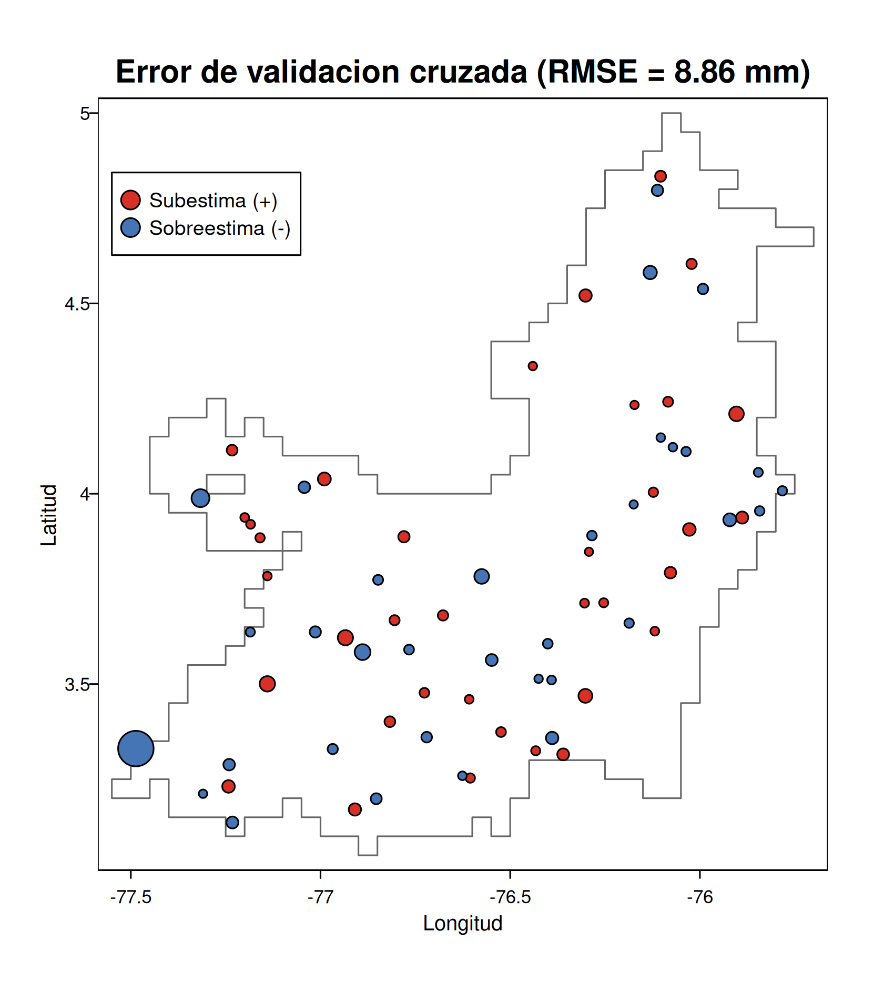
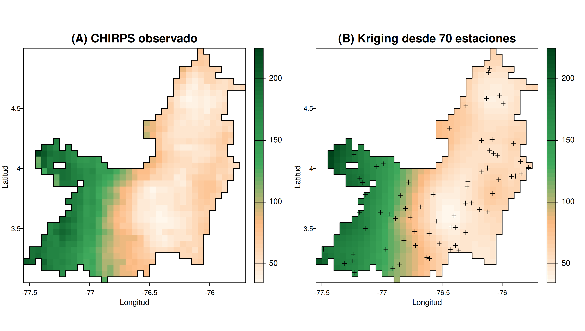

El Valle del Cauca reúne en poco más de 150 km de ancho tres regímenes climáticos que no se parecen entre sí: la vertiente pacífica, una de las zonas más lluviosas del planeta; el valle interandino, seco y plano; y las dos cordilleras que lo encierran. Esa heterogeneidad es la que hace del departamento un buen banco de pruebas para la pregunta que plantea el enunciado, que no es solo predecir lluvia sino evaluar cuánto aporta la correlación espacial cuando ya se tiene un modelo de regresión razonable.
Se trabajó con los rásteres entregados: precipitación semanal CHIRPS, temperatura y radiación de NASA POWER, y altitud SRTM, todos en la misma grilla de 0,05° (39 filas × 37 columnas = 1 443 píxeles, EPSG:4326). La estrategia fue la del kriging universal: separar la lluvia en una tendencia determinística explicada por posición y relieve, y un residuo espacialmente correlacionado que se interpola con kriging ordinario. Cada paso se apoyó en el material del curso y todo el código es base R salvo la carga de mapas.
Valores centinela. CHIRPS no codifica los vacíos como NA sino como negativos muy grandes. El mínimo crudo de las 52 bandas es −76 867,3 mm en 104 celdas. Como la lluvia no puede ser negativa, se filtran (r_precip[r_precip < 0] <- NA); el mínimo pasa entonces a 2,77 mm, que ya es un valor físico. Sin ese filtro, cualquier media, correlación o variograma calculado después queda contaminado.
El rectángulo no es el departamento. Los 1 443 píxeles incluyen océano Pacífico y territorio vecino. Al enmascarar con altitud y precipitación simultáneamente quedan 688 celdas, y ese es el denominador correcto para cualquier porcentaje. Medir cobertura contra las 1 443 celdas lleva a concluir que la altitud solo cubre el 47,7 % del área y a descartarla, cuando en realidad la cubre por completo.
Cobertura efectiva de las covariables. El enunciado afirma que las capas son comparables píxel a píxel. Eso es cierto en geometría, pero no en contenido:
| Variable | Celdas con dato | % del área | Valores distintos | Decisión |
|---|---|---|---|---|
| Precipitación (CHIRPS) | 688 | 100,0 | 688 | variable respuesta |
| Altitud (SRTM) | 688 | 100,0 | 688 | entra al modelo |
| Temperatura (NASA POWER) | 123 | 17,9 | 56 | se descarta |
| Radiación (NASA POWER) | 28 | 4,1 | 3 | se descarta |
Tabla 1. Cobertura real dentro del límite del departamento. El porcentaje está calculado sobre las 688 celdas del área de estudio, no sobre el rectángulo.
La explicación es la resolución nativa: CHIRPS es 0,05° y NASA POWER es 0,5°, diez veces más grueso. El remuestreo reproyectó la rejilla pero no rellenó los huecos, así que dentro del departamento solo sobrevivieron los centros originales. En el caso de la radiación esto deja tres números para todo el Valle. No es un gradiente, es un escalón costa/valle/cordillera, y meterlo al modelo como variable continua le atribuiría a la radiación lo que en realidad es posición geográfica, que ya entra por la longitud. Temperatura y radiación quedan fuera; el modelo se construye con altitud y coordenadas, las tres con cobertura completa y sin un solo dato inventado. La alternativa era interpolar los huecos, lo que además de arriesgado habría exigido funciones que no se usaron en clase.
Se promediaron las 52 semanas de la climatología 2010-2025 y se tomó el máximo: la semana 44 (primeros días de noviembre), con 91,9 mm de media, frente a los 28,7 mm de la semana 3, la más seca. Trabajar sobre el máximo tiene sentido práctico, porque es cuando la señal espacial es más fuerte y el contraste entre vertientes es más fácil de ver.

Figura 1. Ciclo anual promedio de la precipitación semanal (2010-2025). El régimen es bimodal, con máximos en abril-mayo y en octubre-noviembre: es la firma del doble paso de la Zona de Convergencia Intertropical sobre la latitud del departamento. El mínimo de la semana 3 corresponde al veranillo de enero. La semana elegida tiene más del triple de lluvia que la más seca.
Siguiendo el procedimiento de los ejemplos de geoestadística del curso, se sortearon 70 estaciones dentro del polígono del departamento con spatSample(method = "random") y semilla fija, y se proyectaron las coordenadas a kilómetros (1° de latitud son 110,574 km; 1° de longitud son 111,320 km multiplicados por el coseno de la latitud). La proyección no es cosmética: el semivariograma mide semivarianza contra distancia, y en grados un grado de longitud y uno de latitud no miden lo mismo. Las 70 estaciones dan 2 415 pares de puntos para el variograma.
Vale la pena justificar por qué 70 y no las 688 celdas. Por costo, porque el sistema de kriging invierte una matriz de orden n+1 para cada punto predicho y en cada iteración de la validación cruzada. Y por sentido: un semivariograma modela un proceso observado en estaciones; con las 688 celdas ya se tiene el mapa completo y no queda nada que interpolar. El muestreo simula una red de observación para poder evaluar el kriging contra un valor que sí conocemos.
| Mínimo | Q1 | Mediana | Media | Q3 | Máximo | Desv. est. | CV | Shapiro-Wilk |
|---|---|---|---|---|---|---|---|---|
| 34,93 | 51,72 | 64,17 | 91,09 | 125,88 | 189,01 | 51,32 | 56,3 % | W = 0,816 · p = 6,4e−08 |
Tabla 2. Estadística descriptiva de la precipitación en las 70 estaciones, semana 44 (mm).
La media supera a la mediana en un 42 %, señal de asimetría fuerte a la derecha. De Q1 a la mediana hay 12 mm y de la mediana a Q3 hay 62 mm, cinco veces más: la cola larga es la vertiente pacífica. Shapiro-Wilk rechaza la normalidad con holgura. Esto importa porque el kriging es un predictor lineal cuyo óptimo se argumenta bajo normalidad, pero la pregunta relevante no es si la precipitación es normal, sino si lo son los residuales una vez quitada la tendencia. Queda respondida en la sección 3.
Figura 2. Precipitación de la semana 44 recortada al límite departamental, con las 70 estaciones sorteadas. La vertiente pacífica supera los 200 mm mientras el valle interandino se queda entre 30 y 50 mm: un factor de 5 a 7 veces en unos 150 km. Es el efecto orográfico clásico, con la masa húmeda del Pacífico descargando contra la cordillera Occidental y llegando ya seca al valle. La consecuencia para el modelo es directa: buena parte de la varianza no es estructura aleatoria sino tendencia de gran escala en la longitud.
| Covariable | Correlación con precipitación | Lectura |
|---|---|---|
| Longitud (x, km) | −0,890 | por sí sola explica el 79 % de la varianza |
| Altitud (m) | −0,651 | aparentemente fuerte, pero confundida (sección 3.1) |
| Latitud (y, km) | −0,274 | aporte marginal |
Tabla 3. Correlación de Pearson de cada covariable con la precipitación.
Con las tres covariables se compararon dos modelos anidados:
| Modelo | Especificación | R² | R² ajustado |
|---|---|---|---|
| A | precip ~ x_km + y_km | 0,8336 | 0,8286 |
| B | precip ~ x_km + y_km + altitud | 0,8449 | 0,8379 |
| Coeficiente del modelo B | Estimación | valor p | Observación |
|---|---|---|---|
| Intercepto | 79,4979 | < 0,0001 | |
| x_km (longitud) | −1,1610 | < 0,0001 | 1,16 mm menos por cada km hacia el oriente |
| y_km (latitud) | +0,3165 | < 0,0001 | la correlación simple era −0,274: cambia de signo |
| altitud | +0,0098 | 0,0317 | la correlación simple era −0,651: cambia de signo |
Tabla 4. Modelos de tendencia y coeficientes del modelo elegido. El test F anidado A contra B da F = 4,817 con p = 0,0317, así que la altitud se queda.
El resultado interesante es el cambio de signo de la altitud. La correlación simple decía "a más altura, menos lluvia". Lo que decía en realidad era "más al oriente, menos lluvia", porque la costa es baja y occidental mientras la cordillera es alta y oriental: la correlación entre altitud y longitud es de 0,755. Al controlar la posición, el efecto de la altitud se invierte y pasa a ser positivo. Es un caso de manual de confusión (confounding), y conviene dejarlo explícito porque la conclusión ingenua (la altitud seca) es exactamente la contraria de la que sostiene el modelo.


Figura 3. Izquierda: la relación altitud-precipitación estratificada por tercil de longitud. Agrupando los 70 puntos la pendiente es −0,0369 mm/m, pero dentro de cada banda cambia: oeste −0,0582, centro +0,0167, este +0,0050. En el Chocó el máximo de lluvia está al nivel del mar porque la masa húmeda es somera y descarga abajo; en las laderas interiores manda el ascenso orográfico y la lluvia sube con la altura. Derecha: gráfico de variable añadida, con los residuales de precipitación y de altitud después de quitarle a ambos la posición. Su pendiente, +0,0098, es exactamente el coeficiente de la tabla 4, y es el efecto real de la altitud una vez descontada la longitud.
Aquí se resuelve la duda que quedó abierta en la sección 2:
| Serie | Desv. estándar | Shapiro-Wilk W | valor p | Conclusión |
|---|---|---|---|---|
| Precipitación cruda | 51,32 mm | 0,8156 | 6,4e−08 | se rechaza normalidad |
| Residuales del modelo B | 20,21 mm | 0,9750 | 0,1739 | no se rechaza normalidad |
Tabla 5. Normalidad antes y después de quitar la tendencia.
La asimetría que se veía en la precipitación era la tendencia, no la distribución. Quitada la deriva, los residuales son compatibles con una normal y el kriging queda justificado como predictor lineal óptimo, sin necesidad de transformar la variable. Es un resultado que vale la pena subrayar porque el reflejo habitual ante una variable asimétrica es aplicarle logaritmo, y aquí habría sido un error: la asimetría desaparece sola al modelar la posición.


Figura 4. Izquierda: diagnóstico de los residuales. El Q-Q sigue la recta con colas ligeramente cortas, pero el panel de residuales contra ajustados dibuja una U clara (ajustado ≈ 30 → residual +30; ajustado ≈ 100 → residual −40; ajustado ≈ 170 → residual +25). Es curvatura sistemática: la tendencia lineal en longitud está mal especificada. Derecha: esos mismos residuales sobre el mapa. No están dispersos al azar sino agrupados en manchas — el modelo sobreestima en el centro del valle y en el norte, y subestima en los dos flancos. Es la U del panel anterior vista en el espacio: una recta no puede curvarse, así que aplana el fondo del valle hacia arriba y las laderas hacia abajo. Este mapa anticipa el resultado de la sección 4.
Esta es la pregunta central del enunciado y se responde con el procedimiento que prescribe el material del curso: aplicar el índice de Moran a los residuales de la regresión. La Lecture on Spatial Statistics lo dice explícitamente: los mínimos cuadrados suponen errores independientes, y cuando los residuales presentan autocorrelación espacial ese supuesto se viola y las estimaciones dejan de ser eficientes.
Los índices de Moran y Geary se programaron a mano siguiendo las fórmulas de clase. La matriz de pesos es binaria por umbral de distancia y estandarizada por filas. Conviene advertir que el umbral cambia el resultado, así que en vez de reportar un número suelto se reportan tres, y la significancia se evalúa por permutación con 999 remuestreos.
| Percentil de distancia | Umbral (km) | Vecinos prom. | I de Moran (precip.) | I de Moran (residuales) | C de Geary (residuales) | valor p |
|---|---|---|---|---|---|---|
| 5 | 19,7 | 3,5 | 0,955 | 0,793 | 0,187 | 0,001 |
| 10 | 28,0 | 6,9 | 0,938 | 0,722 | 0,275 | 0,001 |
| 25 | 48,5 | 17,3 | 0,812 | 0,460 | 0,540 | 0,001 |
Tabla 6. Autocorrelación espacial por umbral de vecindad. Bajo aleatoriedad se esperaría I = −1/(n−1) = −0,014 y C = 1.
La correlación espacial importa, y bastante. Después de que la regresión se llevó el 84 % de la varianza, lo que sobra sigue teniendo estructura espacial fuerte: con vecindad de 20 km el I de Moran de los residuales es 0,793 frente a un valor esperado de −0,014. Moran y Geary apuntan al mismo lado en las tres configuraciones (I alto acompañado de C bajo), lo que descarta un error de cálculo. El valor p de 0,001 es el mínimo alcanzable con 999 permutaciones: ninguno de los 999 reetiquetados al azar llegó al valor observado. Dicho de otra manera, un modelo de regresión por sí solo deja sobre la mesa información espacial aprovechable, y ese es justamente el hueco que llena el kriging.


Figura 5. Izquierda: diagrama de Moran, con el residual estandarizado en el eje horizontal y el promedio de sus vecinos en el vertical; la pendiente de la recta es el índice. El predominio de rojos (alto rodeado de alto) y azules (bajo rodeado de bajo) sobre los grises discordantes es la autocorrelación positiva vista punto a punto. Derecha: correlograma, el resultado más informativo de esta sección. No es una curva que decae hasta cero y se queda ahí, sino una onda: I = +0,79 a 10 km, +0,50 a 30 km, cruza cero cerca de los 48 km, llega a −0,54 a los 89 km y vuelve a subir a +0,51 a los 149 km.
Cada tramo del correlograma se lee sobre el mapa de residuales de la figura 4. El tramo positivo de 0 a 48 km es dependencia espacial genuina y anticipa el rango que estimará el semivariograma. El mínimo de −0,54 alrededor de los 89 km dice que dos puntos separados esa distancia tienden a tener residuales de signo opuesto, que es media anchura del departamento: el azul del centro del valle contra el rojo de un flanco. Y el repunte positivo hacia los 149 km es el reencuentro de los dos flancos entre sí, que son ambos rojos y están separados aproximadamente esa distancia.
Ese lóbulo negativo tiene una consecuencia técnica importante: indica que los residuales no son estacionarios de segundo orden a gran distancia, porque todavía queda estructura determinística. Los modelos de semivariograma asumen crecimiento monótono hasta una meseta, y eso solo se cumple hasta unos 50 km. Ahí se fija el corte de la sección siguiente, con respaldo del libro del curso, que recomienda limitar la distancia máxima precisamente "en caso de que se observe un comportamiento errático a distancias mayores".
El diagnóstico anterior obliga a revisar la tendencia. El libro del curso indica que cuando hay tendencia en los datos "esta tendencia se modela con modelos de regresión polinómicos […] y el semivariograma se construye con los residuales obtenidos", así que la curvatura detectada en la figura 4 justifica probar un término cuadrático. Se llevaron las dos tendencias en paralelo —lineal y con I(x_km^2)— y se dejó que decidiera la evidencia, en vez de elegir una por comodidad.
Sobre el semivariograma empírico, construido agrupando los 2 415 pares en intervalos de distancia, se ajustaron por mínimos cuadrados los tres modelos que define el material de clase, con optim() y varios puntos de arranque porque no son lineales en los parámetros:
El criterio para aceptar un ajuste no es qué tan bien pega la curva, sino un supuesto teórico: bajo estacionariedad de segundo orden la meseta debe aproximar la varianza del proceso. Si la supera claramente, el semivariograma sigue creciendo y eso significa que quedó tendencia sin modelar.
| Tendencia | Modelo | Meseta | Varianza residual | Razón | Veredicto |
|---|---|---|---|---|---|
| cuadrática | esférico | 161,7 | 158,8 | 1,02 | coherente |
| cuadrática | gaussiano | 152,9 | 158,8 | 0,96 | coherente |
| cuadrática | exponencial | 285,6 | 158,8 | 1,80 | meseta > varianza |
| lineal | gaussiano | 537,6 | 408,4 | 1,32 | no estacionario |
| lineal | esférico | 769,6 | 408,4 | 1,88 | no estacionario |
| lineal | exponencial | 1275,1 | 408,4 | 3,12 | no estacionario |
Tabla 7. Diagnóstico de estacionariedad con corte a 50 km. La tendencia lineal falla en las tres configuraciones; la cuadrática es coherente en dos de tres.


Figura 6. Semivariogramas empíricos con los tres modelos ajustados. Izquierda, residuales de la tendencia lineal: la curva sube sin detenerse y cruza la varianza muestral (línea punteada) sin formar meseta, que es la firma de libro de una tendencia mal especificada. Derecha, residuales de la tendencia cuadrática: la meseta aparece y se estabiliza justo sobre la línea de la varianza hacia los 40 km, y los tres modelos convergen. La decisión entre lineal y cuadrática deja de ser una cuestión de preferencia y pasa a ser evidencia propia.
El ajuste del variograma no basta para elegir el modelo de covarianza. Se hizo validación cruzada dejando uno afuera sobre las seis combinaciones de tendencia y modelo, reestimando en cada iteración tanto la regresión como el sistema de kriging con las 69 estaciones restantes. Para el kriging se usó la relación general C(h) = meseta − γ(h) en lugar de la forma exponencial de los scripts, que solo es correcta cuando no hay efecto pepita, y los pesos se obtienen resolviendo el sistema con multiplicador de Lagrange que impone que sumen 1.
| Tendencia | Modelo | RMSE sin kriging | RMSE con kriging | Mejora | MAE | R² CV | sd(z) | κ(A) |
|---|---|---|---|---|---|---|---|---|
| lineal | exponencial | 21,32 | 7,09 | 66,7 % | 5,29 | 0,981 | 0,69 | 7,7e6 |
| lineal | esférico | 21,32 | 7,15 | 66,5 % | 5,30 | 0,980 | 0,73 | 1,1e6 |
| cuadrática | exponencial | 14,02 | 8,72 | 37,8 % | 5,54 | 0,971 | 1,01 | 1,7e5 |
| cuadrática | esférico | 14,02 | 8,86 | 36,8 % | 5,53 | 0,970 | 1,06 | 1,0e4 |
| cuadrática | gaussiano | 14,02 | 23,16 | −65,3 % | 15,68 | 0,793 | 18,61 | 1,2e5 |
| lineal | gaussiano | 21,32 | 160,29 | −651,9 % | 80,95 | −8,897 | 339,0 | 1,2e8 |
Tabla 8. Validación cruzada leave-one-out, 70 iteraciones por fila. sd(z) es la desviación del error estandarizado (obs − pred)/√(varianza de kriging): si la varianza de kriging está bien calibrada debe rondar 1. κ(A) es el número de condición de la matriz de kriging.
La columna "RMSE sin kriging" responde la pregunta del enunciado en términos de predicción: pasar de 14,02 a 8,86 mm es una mejora del 37 % que se obtiene únicamente explotando la correlación espacial del residuo, sin agregar ninguna variable nueva. Con la tendencia lineal la mejora aparente es aún mayor, del 67 %, pero en ese caso el kriging está compensando una tendencia mal especificada, que es un mérito prestado.
La tabla también deja ver dos trampas. La primera es el modelo gaussiano, que ajusta muy bien el semivariograma empírico y sin embargo destroza la predicción: su matriz de kriging queda casi singular (autovalor mínimo del orden de 10⁻⁵ frente a 9,1 del esférico) y los pesos se disparan hasta dar un R² de −8,9. Ajustar mejor el variograma no es lo mismo que predecir mejor. La segunda es que el menor RMSE no es la mejor opción. Por eso la selección se hizo con tres filtros simultáneos, no con uno:
Exactamente una combinación pasa las tres: tendencia cuadrática con semivariograma esférico. La alternativa de menor error, lineal con exponencial, baja el RMSE a 7,09 mm pero su meseta triplica la varianza y su sd(z) de 0,69 haría que el mapa de incertidumbre exagerara la precisión en un 45 %. Se descarta con argumento, no por gusto. El modelo final queda con pepita 0, meseta 161,7 mm² y rango 56,1 km, y rinde RMSE 8,86 mm, MAE 5,53 mm, R² de validación 0,970 y sd(z) = 1,06.


Figura 7. Izquierda: diagnóstico de la validación cruzada. Los puntos se alinean sobre la diagonal, los residuos de validación no muestran patrón contra el valor predicho, y el Q-Q del error estandarizado sigue la recta con desviación 1,06, lo que confirma que la varianza de kriging está bien calibrada y por lo tanto el mapa de incertidumbre es interpretable. Derecha: el error de validación sobre el mapa. A diferencia de los residuales de la tendencia (figura 4), aquí los colores ya no forman manchas: el kriging absorbió la estructura espacial que la regresión había dejado suelta. Es la confirmación visual de que cumplió su función.
Con el modelo seleccionado se predijo sobre las 688 celdas del departamento, sumando la tendencia estimada y el kriging del residuo. El resultado se contrasta contra el valor real de CHIRPS en cada celda, que actúa como verdad de referencia.
| Conjunto de evaluación | Celdas | RMSE (mm) | R² | Lectura |
|---|---|---|---|---|
| LOOCV sobre las estaciones | 70 | 8,86 | 0,970 | desempeño en puntos conocidos |
| Celdas sin estación | 620 | 10,79 | 0,950 | el número honesto |
| Celdas con estación | 68 | 2,09 | — | no es mérito: con pepita 0 el kriging interpola exacto |
Tabla 9. Tres niveles de evaluación. Las 70 estaciones ocupan 68 celdas distintas porque dos cayeron dentro de la misma.
El número que vale es el de las 620 celdas no muestreadas: RMSE de 10,79 mm y R² de 0,950 reconstruyendo el mapa completo a partir de 70 puntos, sobre un rango observado de 34,9 a 224,8 mm. La predicción cubre de 34,6 a 223,2 mm con media 88,9 frente a 90,1 observada, un sesgo del −1,4 % que es despreciable frente al error. Los 2,09 mm de las celdas con estación no hay que celebrarlos: con pepita cero el kriging está obligado a interpolar exacto en los puntos observados, de modo que ese número mide una propiedad del método y no su capacidad predictiva.

Figura 8. A la izquierda el campo CHIRPS observado y a la derecha el reconstruido por kriging universal desde solo 70 estaciones, en la misma escala de color. Se recuperan el gradiente occidente-oriente, la posición del máximo en la vertiente pacífica y las magnitudes; el mapa estimado es algo más suave, que es exactamente lo que se espera de un interpolador óptimo en media cuadrática.


Figura 9. Izquierda: desviación estándar de kriging. Se comporta como manda la teoría — mínima sobre las estaciones (1,1 mm), creciente con la distancia al dato más cercano y máxima en los bordes y en los huecos sin muestrear (12,6 mm en el filo oriental, la punta norte y la cintura del departamento). Este mapa solo es legible porque sd(z) = 1,06; con el modelo de menor RMSE habría exagerado la precisión. Derecha: la respuesta gráfica al enunciado. (A) es lo que aporta la tendencia determinística y (B) lo que agrega el kriging del residuo. El panel B no es ruido: tiene estructura espacial organizada, y esa estructura es precisamente "el papel de la correlación espacial" que había que evaluar.
La correlación espacial no es un adorno del modelo, es la mitad del modelo. La regresión sobre posición y altitud explica el 84 % de la varianza, pero lo que deja sin explicar conserva una autocorrelación fuerte y significativa (I de Moran 0,79 sobre los residuales, p = 0,001), y aprovecharla con kriging reduce el error de predicción en un 37 %, de 14,02 a 8,86 mm. Sobre el mapa completo, el modelo reconstruye la precipitación de 620 celdas nunca observadas con un R² de 0,950 partiendo de 70 puntos.
Hay tres resultados que conviene destacar por encima de las cifras. El primero es la confusión entre altitud y longitud: la altitud parece secar el territorio cuando se la mira sola y en realidad lo humedece una vez se controla la posición. El segundo es que ajustar mejor el variograma no es predecir mejor, como demostró el modelo gaussiano. Y el tercero es que el menor RMSE no siempre es la mejor decisión: la combinación más precisa en validación era inadmisible por no estacionaria y mal calibrada, y elegirla habría producido un mapa de incertidumbre engañoso.
Sobre las limitaciones, hay cuatro que este trabajo asume y prefiere declarar antes que esconder. Las 688 celdas provienen de un producto grillado, no de estaciones meteorológicas reales, de modo que el R² de validación mide capacidad de reconstrucción del campo CHIRPS y no destreza frente a observaciones independientes. El efecto de la altitud no es homogéneo en el espacio —negativo en la vertiente pacífica, positivo en las laderas interiores— y lo correcto sería una interacción altitud × longitud, que se omitió por mantenerse dentro de las metodologías vistas en clase. El correlograma muestra que los residuales no son estacionarios de segundo orden más allá de unos 50 km, lo que obligó a limitar el corte del variograma y deja fuera del modelo la estructura de gran escala restante. Y el análisis es de una sola semana: la semana 44 se eligió por ser la más lluviosa del año promedio, pero los parámetros del variograma bien podrían cambiar en la temporada seca.
Farr, T. G., et al. (2007). The Shuttle Radar Topography Mission. Reviews of Geophysics, 45(2).
Funk, C., Peterson, P., Landsfeld, M., et al. (2015). The climate hazards infrared precipitation with stations: a new environmental record for monitoring extremes. Scientific Data, 2, 150066.
GADM (2022). Database of Global Administrative Areas, versión 4.1. Límite departamental del Valle del Cauca.
Giraldo Henao, R. Geoestadística: datos espaciales, espacio-temporales y funcionales. Universidad Nacional de Colombia. Material del curso.
Hijmans, R. J. (2025). terra: Spatial Data Analysis. Paquete de R.
NASA Langley Research Center (2025). POWER Project: Prediction of Worldwide Energy Resources, datos meteorológicos y de radiación solar.
Ospina, J. A. (2026). Lecture on Spatial Statistics; Class 5: Handle Spatial Data; Practice Geostatistics, Ejemplos 1 a 4; Script Spatial Analytics. Material de clase, Analítica de Datos 2026-2S, Universidad Autónoma de Occidente.
R Core Team (2025). R: A Language and Environment for Statistical Computing. R Foundation for Statistical Computing, Viena.